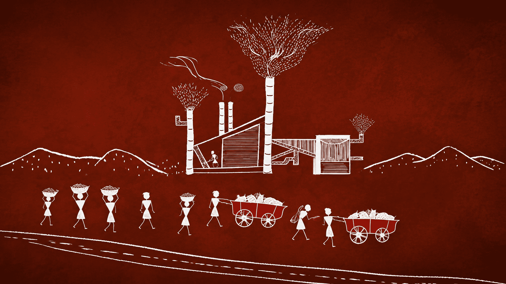

Industry, infrastructure, talent and governance needed to feel connected instead of becoming a list of disconnected claims.
← Back to workOpportunity in motion.
Government of Maharashtra · Investment Film
Opportunity in motion.
Industry drawn to Maharashtra.
Project overview
A state of possibility.
Expressed through movement.
Investment communication has to balance evidence with ambition. Magnetic Maharashtra needed a film that could make industrial capability, infrastructure and opportunity feel like one connected proposition.
A distinctive hand-drawn world turns sectors and systems into a flowing visual journey, positioning Maharashtra as a place where enterprise can arrive, connect and grow.
- Format
- Promotional Film
- Audience
- Global Investors
- Core Thought
- Made for Business
- Visual Style
- Illustrated Motion
The investment film
Many sectors.
One magnetic proposition.
The film transforms development, manufacturing and connectivity into an energetic visual narrative designed to hold attention while communicating scale.
The challenge
Turn economic scale
into a story people follow.
The state needed an investment narrative with its own visual memory, not another conventional corporate montage.
The narrative architecture
Draw the system.
Reveal the momentum.
- 01
Establish place
Begin with Maharashtra’s recognisable identity and a clear invitation to investors.
- 02
Connect sectors
Let illustrated transitions carry audiences across industry, people and infrastructure.
- 03
Land the promise
Resolve diverse capabilities into one confident, business-ready proposition.
The visual world
Rooted in craft.
Built for industry.
A deep Maharashtra red becomes the stage for white linework inspired by regional drawing traditions. Factories, people and landscapes grow from one continuous visual language.

The motion craft
Culture in the line.
Industry in the rhythm.
Continuous drawing
Animated linework creates visual continuity across otherwise complex information.
Sector transitions
One image evolves into the next, making economic breadth feel fluid and connected.
Regional character
Colour and illustration ground the film in Maharashtra without relying on clichés.
Confident pacing
The edit balances information with enough visual surprise to sustain momentum.
The outcome
A complex economy.
One compelling invitation.
The film gives Maharashtra’s investment proposition a distinctive visual identity and turns a broad industrial story into a focused expression of opportunity.
Connected message
Multiple sectors resolve into a single investment narrative.
Distinctive recall
Illustrated motion separates the film from conventional government communication.
Forward energy
Every transition reinforces movement, growth and possibility.
Made for enterprise.Drawn toward progress.
Have a complex proposition to make compelling?